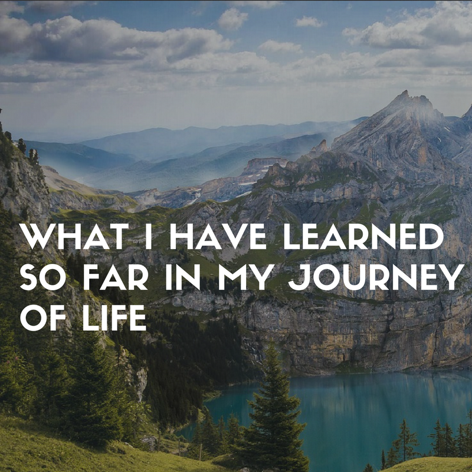

Well I was born in a middle classs family and spent my childhood in Janakpur,Nepal.I completed my basic level schooling there and then I moved to Kathmandu to purue my studies from class 8. I completed my schooling with good marks.Thinking about being an Engineer, I chise science stream in my class 11 was started my prepration for the entrance examination of Engineering. I gave my entrance examination in Pulchowk Campus,the best Enginnering college in Nepal. I was not selected there but my life have some other plans for me.
I got selected to pursue my engineering degree in SRM Institute of Science and Technology through the COMPEX Scholarsip scheme provided by Embassy of India,Nepal.Now in about two months I am going to complete my Engineeering degree. Throughout this 23 years of my journey of life,I have learned so may things.

1.Respect People
When you start to show some respect to people,you will completely be a differnet person. You will be achieving more, doing more and now there are people who are helping me when I got stuck.
It’s unbelievable how much people want to help you, invest in you. You just have to show them that you are a good product, that you respect them. That you are going to give them the respect or appreciation that they truly deserve.
2. Go where pressure is to perform.
You grow when you challenge yourself. Most people choose the easy route they don’t want to work in pressure, they don’t need a challenge.The thing for us as humans is we are prone to danger. Our mind over the thousands of years of evolution learns to stop us doing from everything which we find scary. Facing people, talking to people, starting business etc but most importantly failing.
And that’s why when there is pressure we give up and try not to go and choose that path. But the truth is every thing you want to achieve lies behind the things we try to ignore. When there is pressure to perform you don’t have any choice other than performing.
3. The simple act of showing up
he simple act of showing up is going to change everything for you. What’s hard most often is the courage to take the first step. It’s easy to talk about doing things rather than actually showing up to do them. I learned this couple of years after I starting programming.
Showing up is hard and that’s why people give up before even starting up. But what most people don’t understand is if you do the hardest thing first things afterward become easier and easier.
Doing something is better than doing nothing. Writing 5 blog post a year is better than not writing a single post. Building a business in 3 years is better than just thinking about starting a business for 3 years.
4.Your path is laid out in front of you
Yeah, you don’t have to know anything other than just these two words know & act. You don’t need to learn anything, you know enough. You don’t need any new skills to make an impact. The things we say to ourselves “ I don’t know maybe learning this thing we help me build my dream project”, “Blah blah blah I don’t have access to this thing or that thing” these are the illusion we try to feed our mind in order to not do the right thing because you know what we already know we are going to fail.
5.It’s okay to be who you are
It’s a cruel world out there people will not like when you do what you really like. They want you to act like as they say, work like as they say, talk as like they say but the key to be better than others in your craft and to be more successful is being different, is being disruptive, is being the change.
Everyone is selfish and self-righteous don’t worry about that. Everyone will give you advice, warnings in the day to day life. But what we have is a choice to choose who to follow or who to not.
It is your life live it in your own way.